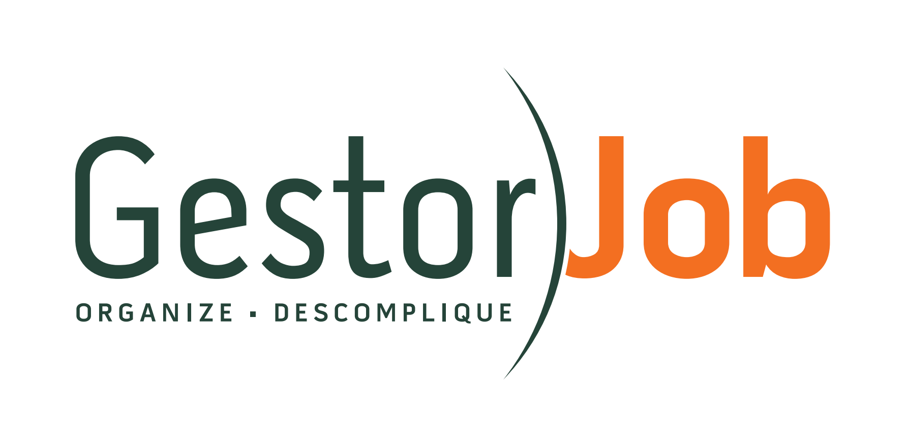

Organize. Descomplique.
Identidade visual aprovada para o protótipo hi-fi. Verde musgo sustenta estrutura e controle; laranja impulsiona ação e entrega. O arco entre as palavras é a borda de um relógio — linha do tempo do job.
Protótipo navegável: prototipo-hifi.html · Lo-fi de referência: prototipo-lofi.html
1. Logotipo
Opção 1 — principal
Slogan bipartido: ORGANIZE (verde) sob Gestor · DESCOMPLIQUE (laranja) sob Job. Preferida para login, onboarding e materiais.
Opção 2 — compacta

Slogan único em verde com bullet. Uso em headers estreitos e documentos densos.
2. Construção tipográfica
- Gestor — peso regular/medium: gestão sem peso visual excessivo.
- Job — bold: força do trabalho e da entrega.
- Arco — curva vertical (timeline / relógio); o “J” nasce por trás da curva.
- Slogan — organizar para que o job seja descomplicado.
3. Paleta
Papéis: moss = navegação, OK, estrutura · orange = CTAs, timer ativo, progresso · danger/warn = atraso e alerta operacional.
4. Tipografia
Família: Nunito (400–800). Evitar Inter, Roboto e Arial como face principal.
5. Componentes
Botões
Pills / badges
Card Kanban
Stats
6. Motivo timeline
O arco do logo vira progressão início → meio → fim (login, wizard, empty states).
Briefing
Entrega
7. Tom de voz
- Direto e operacional — frases curtas, verbos de ação.
- Slogan: Organize · Descomplique — gestão = organizar; job = descomplicar.
- Evitar jargão de “suite enterprise”; preferir linguagem de agência.
8. Do’s / Don’ts
Faça
- Manter contraste Gestor (moss) × Job (orange).
- Usar laranja só em ações e timer.
- Respeitar área livre ao redor do logo ≈ altura do “G”.
- Aplicar o arco em progressões, não como ornamentação aleatória.
Não faça
- Inverter cores do wordmark.
- Alongar ou achatar o arco.
- Usar roxo/glow genérico de UI “AI”.
- Transformar atraso em coluna do Kanban.
9. Mapa do protótipo hi-fi
- Auth: login, convite, recuperar senha, wizard, empty state
- Super Admin: tenants lista / form / detalhe
- Tarefas: Kanban, Lista, Calendário, criar, drawer, timer, recorrência
- Cadastros: clientes, serviços, colaboradores
- Inteligência: dashboard + relatórios
- Config: permissões, blocos, feriados
- Fase 3: portal cliente, integrações, white-label
Abra o app: prototipo-hifi.html